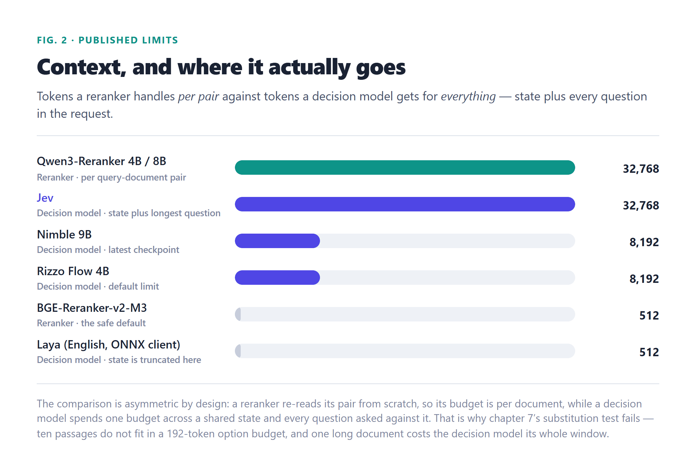
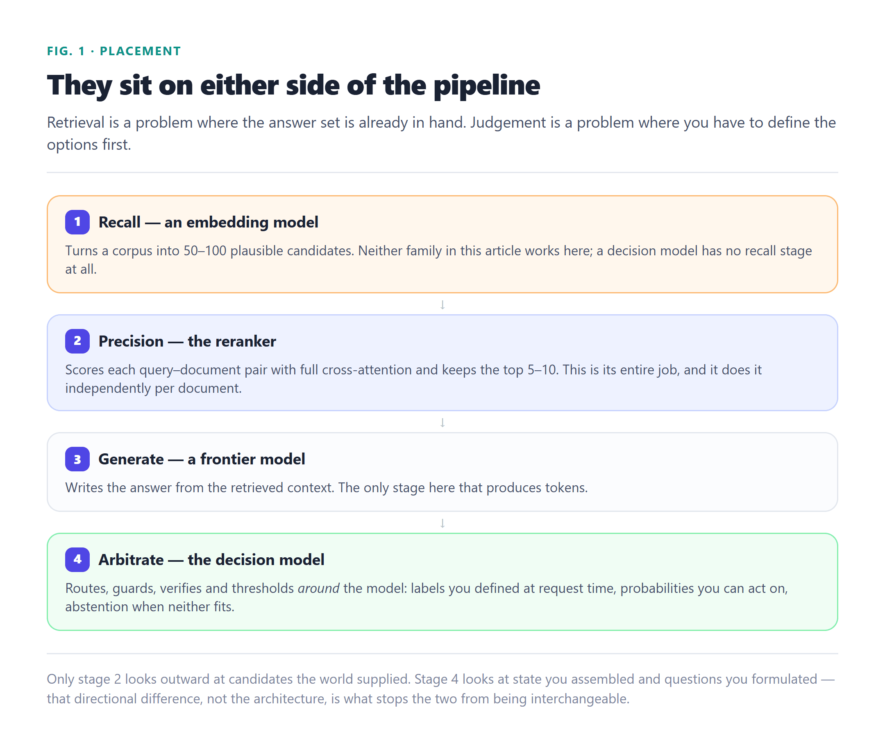

0
output tokens, either model
They look like different categories — one is a retrieval component, the other is the model that decides things for your agent. They are not. Both read an input, score it, and write nothing. The gap between them is narrower than the labels suggest, and the one place they genuinely diverge is a number that most pipelines throw away.
The similarity is not superficial, and neither is the divergence.
Ask a general-purpose model a question and it writes you a paragraph. Ask a reranker how relevant a passage is and it returns a number. Ask a decision model whether a customer is likely to cancel and it returns a probability. Three behaviours, two of them apparently boring — and it is the two boring ones that turn out to be siblings.
The shared trait is structural, not cosmetic. Neither a reranker nor a decision model ever generates a token. Both run a forward pass, read the logits sitting at one position of the prompt, and hand them back. There is no decode loop, no sampling, no output string to parse, and no cost that grows with how long the answer would have been. That is a real architectural property, and it is why the two families feel interchangeable the moment you first look at them.
That contract is what the rest of this article is about. Chapters 2 and 3 put each model under the microscope, chapter 4 lines them up on six axes, chapters 5 and 6 take the two that actually decide the answer — calibration and compute shape — and chapters 7 and 8 run the substitution test in both directions, because the honest answer is not symmetric: one direction works with conditions attached, and the other does not work at all.
One note before starting: both families have been moving fast. The reranker figures here come from our own top-20 reranker ranking and from the model cards themselves; the decision-model figures come from our System One deep dive and the independent benchmark behind it. Every number is dated so you can re-check the ones that will have aged. One thing has changed since the substitution tests were first written: third parties have now ranked both families over the same candidate window and published the numbers, so chapters 7 and 8 quote those measurements directly, name who ran them, and say what they do not cover.
A cross-encoder, one forward pass per pair, and a number that is not a probability.
A reranker — more precisely a cross-encoder — takes your query and one candidate document, concatenates them into a single input, and runs them through a transformer where every token can attend to every other token. It then reads a score from that pass. Because the query and the document see each other from the first layer, this is strictly more expressive than the alternative, where each is embedded separately and compared afterwards.
Two things follow from that design. First, the cost is per pair: to score k candidates you run k forward passes (batched together, but still k inputs). This is why the accepted practice is to embed your way to 50–100 candidates and rerank only those down to the top 5–10 — never to rerank a corpus. Second, pair order matters: most cross-encoders are asymmetric, so the query goes first.
This is the detail that decides the whole comparison, so it is worth being exact about it. On Qwen3-Reranker, the published implementation scores a pair with the raw logit difference logit("yes") − logit("no") read at the final non-padding position. The model card is explicit about the consequence: “By default, scores are raw logit differences. To get 0-1 probability scores, pass a Sigmoid activation function.” That sigmoid is a squashing function, not a calibration step — it puts the number in a range, it does not give it a meaning.
Older pair-classification rerankers work the same way: a single relevance logit, optionally pushed through a sigmoid. And the failure mode of treating that as a probability is documented well enough to quote directly — raw reranker outputs are logits, and they are not comparable across models or across queries. A score of 0.82 from one query says nothing about a score of 0.82 from another.
Two architectural generations sit side by side. The classic generation scores one pair at a time. The newer listwise generation scores a whole list of documents in one pass, which is a direct attack on the k-forward-passes cost — Jina Reranker v3.5 is the current poster child at 0.6B parameters with an 8K–32K listwise window, and it reportedly rivals models many times its size on BEIR. A third approach, late interaction (ColBERT-style), pre-computes per-token document embeddings once and only does the expensive comparison at query time, which is what makes million-document corpora tractable.
| Reranker | Size | Context | Flavour |
|---|---|---|---|
| Jina Reranker v3.5 | 0.6B | 8K–32K | Listwise — scores a list in one pass |
| Qwen3-Reranker-0.6B / 4B / 8B | 0.6B–8B | 32K | Causal yes/no logit per pair, instruction-conditioned |
| BGE-Reranker-v2-M3 | 568M | 512+ | XLM-RoBERTa, 100+ languages, the default everywhere |
| BGE-Reranker-v2.5-Gemma2 | ~2B | 2K–8K | Reasoning backbone, scores contradictions |
| mxbai-rerank-large-v2 | ~1.5–2B | 2K+ | RL-tuned to cut false positives |
| Zerank-2 | ~1.7–4B | Extended | Instruction-conditioned, tops Agentset ELO |
| cross-encoder/ms-marco-MiniLM-L-6-v2 | — | 512 | The classic pair classifier |
| cross-encoder/ms-marco-TinyBERT-L-2 | 4M | 512 | Ultra-fast CPU scoring |
Sizes, context windows and flavours as published by each project and tabulated in this site’s reranker ranking (updated 4 August 2026). Note what the table has in common: every entry is bounded by a context window per pair, and none of them promises that a score means anything beyond the list it just scored.
One state, many typed questions, one distribution per question.
A decision model takes a block of state — a support ticket, a pull request, a log line, a game frame — plus a set of typed questions about that state, and returns a probability for each option you defined. It never writes text, so there is nothing to parse: your schema is the output space.
The three primitives are the whole interface. Choice picks one of up to 255 described options and returns the full distribution over them. Noul asks a yes/no question and returns a single probability. Score places the state on an ordinal rubric of 2–10 described levels and returns the probability-weighted position. Labels arrive at request time, so adding a category means editing a dictionary, not retraining.
| Model | Size | Backbone | Note |
|---|---|---|---|
| Jev | undisclosed | Causal, closed | The reference; 32k state plus longest question |
| Von | 395M | ModernBERT encoder | Best open zero-shot entrant; CPU, under 15 ms |
| Laya | 421M | ModernBERT + head | 100+ languages; fine-tune it, don’t zero-shot it |
| Kev | 0.8B–9B | Qwen3.5/3.8 + LoRA | Serves the same wire contract as the hosted API |
| SemIf | none added | Frozen Qwen3.5-4B | Trains nothing; reads option logits directly |
| Nimble | 9B | Qwen3.5-9B + LoRA | Published contrastive data recipe; 8,192 context |
| Rizzo Flow | 4B / 1.7B | Spark-X2.5 + LoRA | llama.cpp, default 8,192 context, built-in abstention |
The detail that separates these from rerankers is why they output probabilities rather than scores. They are trained against a proper scoring rule — a reward that peaks at the truth rather than at confidence — so a model that reports 0.8 is being pushed, during training, toward actually being right 80% of the time. A reranker is trained to order relevant above irrelevant, and ordering does not care what the numbers are, only how they sort.
Six axes. Two of them are technicalities; four decide which one you want.
| Axis | Reranker | Decision model |
|---|---|---|
| What is scored | One (query, document) pair at a time | One (state, question) pair — many questions against one shared state |
| What comes back | A single scalar per document | A distribution over the options you wrote, plus expected values |
| Competitive or independent | Independent — every document can score high | Mutually exclusive — probabilities sum to 1 |
| Training target | Ordering over relevance labels | A proper scoring rule, so the number is calibrated |
| Typical k | 50–100 candidates in, 5–10 out — designed to scale up | A handful of questions — designed to batch horizontally |
| Output contract | A sort order | Typed JSON: a label, a probability, an abstention |
This is the most quietly consequential difference in the table, so it deserves its own paragraph. A reranker scores each document on its own merits: if all 100 candidates are relevant, all 100 can score 0.9, because nothing forces the scores to compete.
A decision model’s Choice is a softmax over the options. If you hand it 10 candidate documents as 10 options, it must distribute its probability mass across them — it will confidently tell you which one is best even when every one of them is irrelevant, and the moment you add an 11th bad option the other ten shift. For picking a single winner that is exactly what you want. For judging a set of candidates where the correct answer may be “none of these”, it is a trap — and the workaround (adding an explicit “none of them is relevant” option) is a workaround, not a design.
Where a ranking instrument and a measuring instrument come apart.
Everything up to here has been about shape. This chapter is about meaning, and it is the reason the substitution tests come out asymmetric.
A reranker’s job is to produce an ordering. Given one query and one list, the only thing you do with the scores is sort them and take the top k. For that job, calibration is irrelevant — multiplying every score by 7 changes nothing about the sort. So rerankers are not trained for it, and their scores are not comparable across queries: a 0.9 on one query and a 0.4 on another can describe equally relevant documents.
A decision model’s job is to produce a threshold. The moment an application says “act when the probability exceeds 0.8”, the number stops being an ordering and starts being a measurement, and it has to survive being compared to outcomes. That requires the reward to peak at the truth: a proper scoring rule such as the log score or the Brier score, where reporting 0.7 when the true rate is 0.7 scores better than reporting 0.9 or 0.5. A 0/1 reward on a sampled answer has no such property — it peaks at 1.0 regardless of the truth — which is precisely why you cannot get calibration by accident.
| You want to… | With a reranker | With a decision model |
|---|---|---|
| Put the best candidate first | Native. That is what it is for | Works for a short list, wastes the probability |
| Return nothing when nothing fits | Not possible without fitting a cutoff | Native. Abstention is part of the contract |
| Act only above 0.8 confidence | Not possible without fitting a calibrator | Native, after a temperature fit on your labels |
| Compare confidence across requests | Not meaningful | Meaningful by construction, drifts with domain |
| Return a label a program can switch on | Sort order only | Native. Typed JSON, no parsing |
The middle column is not a criticism of rerankers — nobody chose a badly designed contract. It is that “rank these for me” and “tell me how likely this is” are different questions, and only one of them has an ordering for an answer.
Both skip generation. Only one of them gets cheaper as you ask more questions.
It would be easy to assume that a decision model’s advantage is “no decode loop”. It is not, because rerankers have no decode loop either — they also read a single position and stop. So the interesting question is what happens to cost as the amount of work grows.
For a reranker the cost is k forward passes over k (query, document) pairs, and the query is repeated in every one of them. Batch them and you amortise the launches, not the arithmetic. Listwise models fix part of this by scoring a list at once, and late-interaction models pre-compute the document side entirely — both are real answers, and both narrow the gap this section used to own.
For a decision model the state is prefilled once and the questions branch off it, sharing its key/value cells instead of copying them, read at one position each. The measured shape of that is flat in the question count:
Short list: yes, with conditions. Real retrieval: no.
Let us be concrete. You have a query and ten short candidate passages, and you want the best one — or you want to know whether any of them is good enough to use. There are two ways to put that to a decision model.
# Option 1 — one Choice over the candidates: cheap, competitive
{"state": {"query": "does the refund policy cover partial refunds?"},
"questions": {"best_doc": {"type": "choice",
"criteria": {"doc_1": "<passage>", "doc_2": "<passage>", ...}}}}
# Option 2 — one Noul per candidate in a single request: independent,
# each returns a probability you can threshold
{"state": {"query": "...", "doc_1": "<passage>", "doc_2": "<passage>"},
"questions": {"relevant_1": {"type": "noul", "instructions": "Is doc_1 on topic?"},
"relevant_2": {"type": "noul", "instructions": "Is doc_2 on topic?"}}}Option 2 is the one worth noticing. The state is prefilled once, the questions are isolated from each other by design — a question cannot see a sibling’s answer — so each candidate is judged independently and returns its own calibrated probability. That is the property the reranker also has, plus the property the reranker lacks. You can also ask, in the same single request, things a reranker has no way to express: is it relevant, is it authoritative, is it stale, should we ship it.

Up to here the substitution test has been argued from contracts. Third parties have now run part of it, and the numbers are worth having in front of you. In September 2026 the search team at Opine took 64 sales queries, built one candidate window per query (the top 60 and the top 200 from their own hybrid retrieval), graded every candidate with an independent model (GPT-6 Astra), and ranked the same window several ways: with Jev used as a reranker — one Noul question per document, batches of 20–30 — against dedicated cross-encoders (Cohere Rerank 3.5, 4 Fast and 4 Pro, Voyage Rerank 3) and against frontier LLMs ranking the whole list at once (GPT-6 Luna, GPT-6 Sol, Claude Opus 5.5).
| Same candidate set, same grader | Decision model as reranker (Jev) | Best dedicated cross-encoder | Frontier LLMs |
|---|---|---|---|
| Recall@20 gain over hybrid search, 60 candidates | +12 pts | +7 (Voyage Rerank 3) | GPT-6 Luna +11; Sol and Opus 2–3 pts higher |
| Recall@20 gain, 200 candidates | +17 pts | not reported at that window | — |
| nDCG@20, 200 candidates | 0.876 | 0.815 (Voyage Rerank 3) | 0.864 (Luna); Sol and Opus ~0.92 |
| Median latency per search | 0.4 s parallel (0.9 s at 60, 1.9 s at 200 sequential) | 0.3–0.7 s | — |
| Cost per 1,000 searches | $0.80 at 60, $2.19 at 200 | list prices | significantly higher |
| Top-20 overlap with the best frontier model | 57% (Opus), 58% (Sol) | — | Opus and Sol agree 72% |
Opine, September 2026 — 64 sales-related queries, 60- and 200-result windows from one hybrid retriever, documents graded by GPT-6 Astra rather than by people. A second, smaller measurement from MindStudio in the same month put a decision-model rerank step on top of a plain BM25 baseline and moved top-1 accuracy from 21% to 54% without touching the retriever, at about 17 decisions per second sequentially (roughly 40 s per batch), falling to 7.6 s with 64 requests in flight. Both are small-n, LLM-graded evaluations run by teams using the model rather than by its makers — Opine calls its own a “vibe check” and lists human label validation among its next steps — so read the magnitudes as indicative and the ordering as the interesting part.
Notice as well what the table does not cover: no test touched the recall stage, none went past 200 candidates, none ran multilingual corpora or pre-computable embeddings, and all of them sat inside the limits listed above (roughly 1,000-character documents, a window that fits a shared state). The measured numbers firm up the shortlist half of the verdict; they do not probe the retrieval half, which remains an argument from structure.
The shorter test, because the answer is shorter.
A reranker is not as fixed as it first appears. Its instruction field lets you define what “relevant” means for this query, and instruction-conditioned models like Zerank-2 take that seriously. So you can point one at a binary proposition: set the instruction to “an urgent customer support ticket” and read its yes/no logit. That is, near enough, what Qwen3-Reranker does internally on every pair.
So it fakes one binary decision. What it cannot fake:
There is a measured version of this verdict, and it is a measurement of what gets measured. Decision models publish calibration error next to accuracy, because their numbers are meant to be thresholds. On the JevBench v1.4 board Von 1.2 posts a sealed-half expected calibration error of 0.107 against Laya’s 0.172, under one protocol. Laya’s own model card reports 0.766 accuracy, Brier 0.062 and ECE 0.213 over 2,000 decisions, breaks it down by primitive (noul 0.857, choice 0.733, score 0.723) and then warns in its own limits section that the confidence is still uncalibrated and should be refit on held-out data. Jev’s figures, as quoted in that same card, are accuracy 0.727 with ECE 0.144. Latency is reported per decision: Von runs a p50 of 0.096 s on four vCPUs under OpenVINO and 0.023 s on an A10G, and 32.8 ms p50 across the 38-benchmark, ~150k-request Decision Index.
Reranker boards, by contrast, publish ordering and only ordering. BEIR reports nDCG@10 — the Jina Reranker v3 paper quotes 61.94 nDCG@10 as the best among the rerankers it evaluated — and no expected calibration error, no Brier score and no cutoff quality appears anywhere in the standard tables. It is not an omission: a raw logit is not a probability until somebody fits a mapping, so the boards have no number they could report. That asymmetry is the Test B result, measured. You can audit whether a decision model’s number may drive an action; for a reranker the audit does not exist until you have fitted the calibrator that the decision model was trained to make unnecessary.
They are not competitors. They are adjacent stages.
Once the substitution tests are done, the placement is easy: the two models sit on either side of a boundary neither of them crosses.
| Stage | Model | The job |
|---|---|---|
| Recall | Embedding model / hybrid search | Turn a corpus into 50–100 plausible candidates |
| Precision | Reranker | Order those candidates, keep the top 5–10 |
| Generation | Frontier LLM | Write the answer from the retrieved context |
| Arbitration | Decision model | Route, guardrail, verify and threshold — around the model, not over the corpus |
The distinction to carry away is one of direction. A reranker looks outward at a candidate set that the world supplied and asks which of those matters. A decision model looks at a state you assembled and asks a question you formulated. Retrieval is a problem with an answer set already in hand; judgement is a problem where you have to define the options first. Same mechanism, opposite direction of travel.

The shortest useful table in the article.
| If you want… | Use | Why |
|---|---|---|
| 50–100 retrieved chunks trimmed to the top 5–10 | Reranker | Designed for it; listwise models make it cheap |
| Long documents, 32K per pair | Reranker | Qwen3-Reranker takes 32K per pair today |
| Millions of documents, pre-compute once | Late-interaction reranker | ColBERT-style embeddings are pre-computable |
| Multilingual recall with one small model | Reranker | BGE-Reranker-v2-M3: 568M, 100+ languages, default everywhere |
| Route a ticket into typed categories | Decision model | Labels at request time, probabilities per option |
| Score on an ordinal rubric | Decision model | Score has no reranker equivalent |
| Act only when confidence clears 0.8 | Decision model | Calibrated by construction, after a local fit |
| Return nothing when nothing qualifies | Decision model | Abstention is native; a reranker must be fitted first |
| Many checks over one long document in one call | Decision model | One prefill, questions nearly free |
| “Is this document relevant?” for a shortlist, then decide | Both, in that order | Rerank to shortlist, then judge with thresholds |
The five questions that come up every time.
Architecturally, closer than the naming suggests: both read logits at one position and generate nothing. Contractually, no. One returns a scalar that only orders, trained to rank; the other returns a distribution that means something, trained on a proper scoring rule. The difference is not the architecture, it is the target.
Not as it stands. Reranker outputs are raw logits, not comparable across models or queries, and a sigmoid only squashes them. If you need a cutoff, fit a calibrator on your own labelled pairs and refit on drift. If you need a threshold often, that is a signal you wanted a decision model.
For a handful of short candidates, yes — and at that scale the answer is now measured rather than argued: in Opine’s 64-query test a decision model reranking 60–200 candidates beat every dedicated cross-encoder it faced on Recall@20 and nDCG@20, at 0.4 s median latency and under $1 per 1,000 searches. For the retrieval job, no: candidate counts, the 192-token option budget, context limits, independent scoring and the absence of recall-stage tooling all say no. Rerank to a shortlist, then decide.
Yes, and it is the reason they get confused. Neither pays a decode loop, so neither has output that grows with answer length, and neither produces text you have to parse. It is the single strongest thing the two families have in common — and the reason “it gives me a number in 0–1” feels like a shared contract when it is not.
It depends on the shape of the work, not the model. A reranker costs you one forward per candidate and nothing else. A decision model costs a prefill over the state and then almost nothing per question. So: many questions about one shared state favours the decision model; many independent long documents favour the reranker, especially listwise ones.
Where each claim came from.
| # | Source | Used for |
|---|---|---|
| 1 | Qwen/Qwen3-Reranker model cards (0.6B / 4B / 8B) and the NVIDIA NeMo reranker component docs | The raw logit difference logit("yes") − logit("no"), and the card’s “pass a Sigmoid to get 0-1” caveat |
| 2 | AIMultiple reranker benchmark; published guidance on reranking deployments | Causal yes/no scoring, and the warning that raw outputs are not comparable across models or queries |
| 3 | This site, Top 20 Reranker Models 2026 (4 Aug 2026) | The reranker table, listwise and late-interaction flavours, the 50→10 practice, pair ordering |
| 4 | This site, Embedding, Reranker & OCR Models 2026 | Reranker sizes, licences and hardware requirements |
| 5 | This site, System One decision models deep dive | The decision-model family, primitives, KV-sharing mechanism and hosting paths |
| 6 | jabr classifier-benchmark (CC0), v2 suite: 49 tasks / 866 cases | The independent accuracy numbers behind the decision models discussed |
| 7 | Deußer, Sparrenberg & Sifa, Evaluating and Benchmarking the System One Model Jev (arXiv:2609.37647) | 32k state limit, 255-option Choice, price, and the calibration/selective-prediction findings |
| 8 | Laya ONNX client README (receptron/laya) and Laya model cards | The 192-token option budget and the 512-token state truncation |
| 9 | Rizzo Flow, SemIf, Nimble and Kev repositories | The batching, throughput and context figures quoted in chapter 6 |
| 10 | Opine, Using Jev to improve search quality (September 2026) | The same-candidate-set head-to-head in chapter 7: Recall@20 and nDCG@20 at 60 and 200 candidates, latency, cost per 1,000 searches, top-20 overlap |
| 11 | MindStudio, JEV as a Steerable Reranker (21 September 2026) | BM25 top-1 accuracy 21% → 54% with a decision-model rerank step; ~17 decisions/s sequential, 40 s → 7.6 s at 64-way concurrency |
| 12 | Von model card (wfzyx/von, Hugging Face), JevBench v1.4 board | Sealed ECE 0.107 vs Laya 0.172; 0.096 s p50 on 4 vCPU, 0.023 s on A10G; Decision Index p50 32.8 ms over ~150k requests |
| 13 | Laya typed-decisions model card (convaiinnovations/laya-typed-decisions) | Accuracy 0.766, Brier 0.062, ECE 0.213, the per-primitive breakdown, the card’s own uncalibrated-confidence warning, and Jev’s quoted 0.727 / ECE 0.144 |
| 14 | Ma et al., jina-reranker-v3: Last but Not Late Interaction (arXiv:2509.25085) | 61.94 nDCG@10 on BEIR — the ordering-only metric reranker boards report, and the reason chapter 8’s calibration row is empty |
| 15 | This site, scripts/benchmark-substitution.py | The runnable protocol behind chapters 7–8: one shared candidate window, seeded fit/eval split, threshold, abstention, agreement and latency reporting, with an offline --self-test for its metric core |
Assembled 6 October 2026. Reranker sizes and context windows are as published by each project; the reranker ranking was last updated 4 August 2026 and will have moved. Decision-model calibration figures are the projects’ own unless the source is named as independent. The verdicts in chapters 7 and 8 are ours — but they no longer rest on argument alone: third parties have now ranked both families over the same candidate window (Opine, MindStudio) and published the numbers quoted in chapter 7, and the calibration row in chapter 8 is filled in from the model cards themselves. What still does not exist is a formal two-family study with human-labelled relevance at retrieval scale; the protocol for one — build the window once, split queries into fit and eval halves, report ranking, cutoff quality, abstention, agreement and latency — ships with this site as scripts/benchmark-substitution.py, and its metric core can be verified offline with --self-test before any model or dataset is involved.
Tell me what you’re working on and I’ll help you work through it — where you got stuck, what you’re trying to build, which model to pick. Your message arrives with this article attached, so I’ll know exactly what you’re reading.